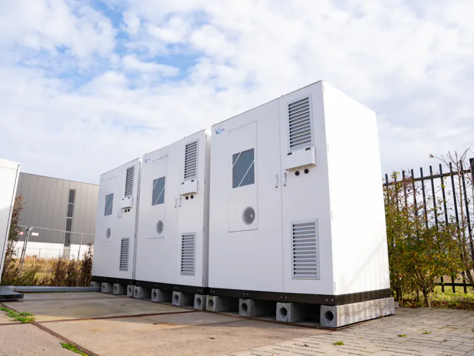
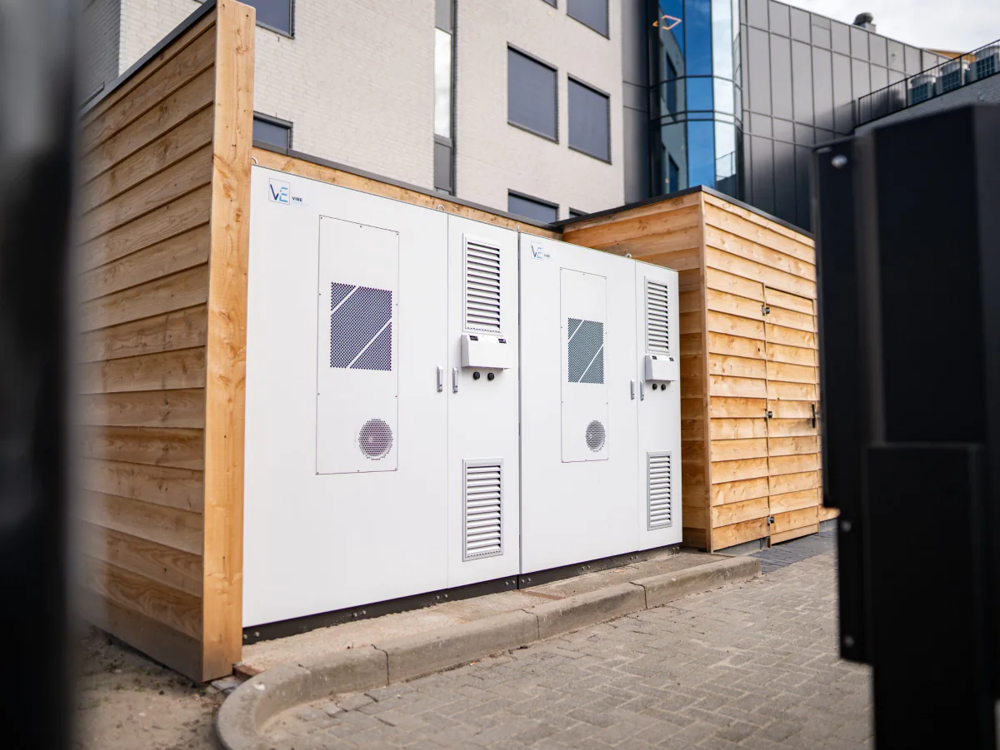
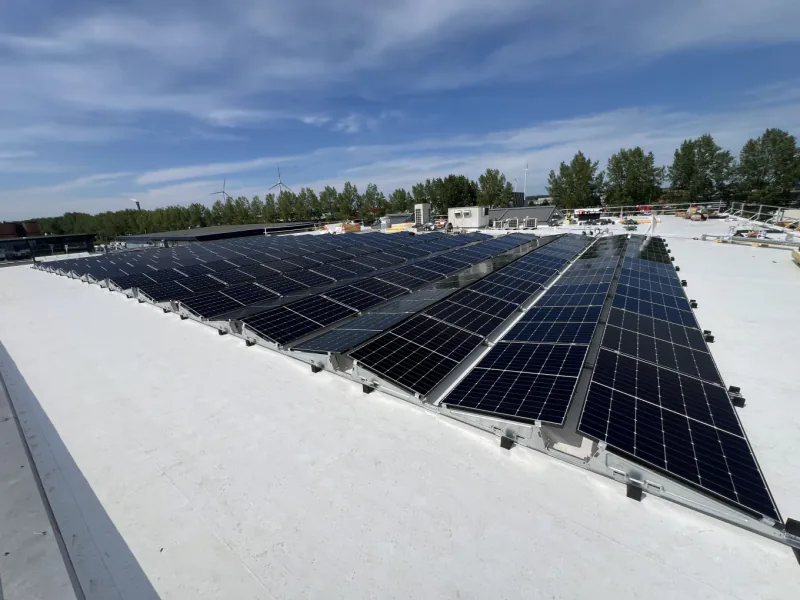
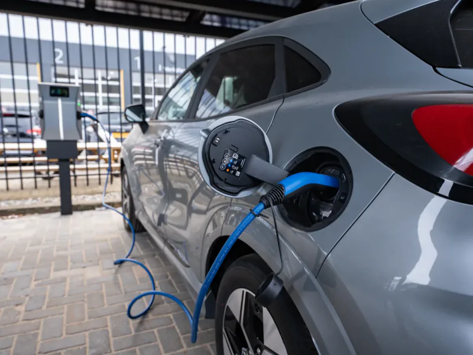
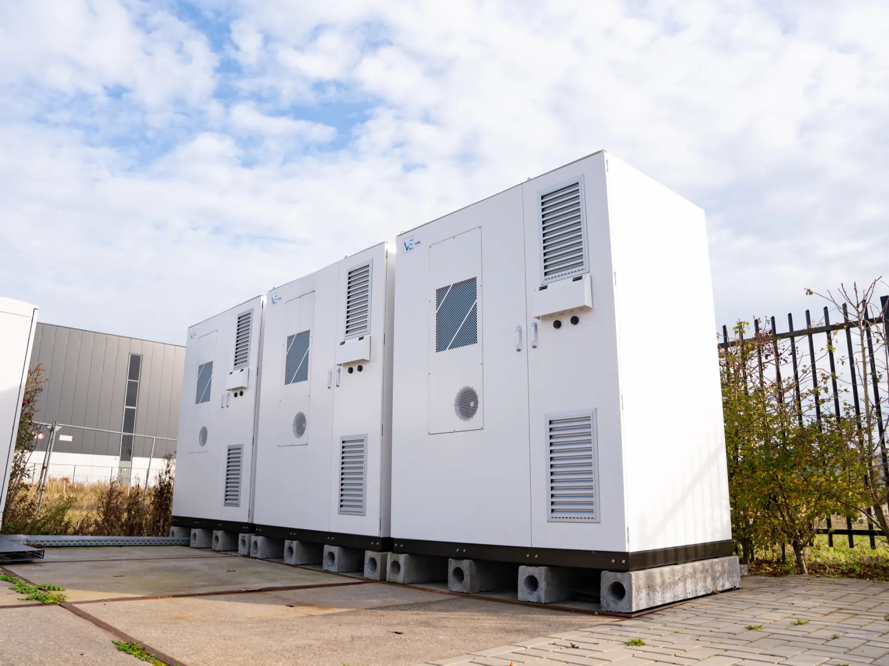

Energieopslag
Een modulair batterijsysteem in eigen buitenopstelling, gedimensioneerd op het kwartiersprofiel van uw locatie. Vlakt pieken af en maakt eigen opwek bruikbaar op het moment dat u hem nodig heeft.
Over energieopslag
Vibe Energy ontwerpt, bouwt en beheert lokale energie-infrastructuur achter de meter. Batterijopslag, zonne-energie en laadinfrastructuur werken als één gestuurd systeem, zodat uw locatie meer kan binnen de aansluiting die er al ligt.
De meeste locaties hebben hun capaciteitsprobleem niet omdat er te weinig energie is, maar omdat opwek en verbruik niet op hetzelfde moment vallen. Wie opslag, opwek en laadvraag op elkaar afstemt, maakt ruimte vrij die er al was.
Een gestuurde batterij vangt de piek op waar de aansluiting hem niet aankan, en zet eigen opwek in op het moment dat het verbruik erom vraagt.
Het systeem bewaakt continu dat de gecontracteerde waarde niet wordt overschreden. Verzwaren hoeft niet; wachten op de netbeheerder evenmin.
VIBE.CONTROL weegt opwek, opslag, laden en gebouwlast tegen elkaar af en kiest per moment waar het vermogen heen gaat.

Opslag in bedrijfVibe levert de onderdelen niet los. Ze worden samen ontworpen, samen gebouwd en samen aangestuurd — dat is waar het rendement vandaan komt.
Een modulair batterijsysteem in eigen buitenopstelling, gedimensioneerd op het kwartiersprofiel van uw locatie. Vlakt pieken af en maakt eigen opwek bruikbaar op het moment dat u hem nodig heeft.
Over energieopslag
De stuurlaag. Leest opwek, verbruik en aansluiting uit en bepaalt per moment waar het vermogen heen gaat — binnen grenzen die vooraf zijn vastgelegd.
Opwek op dak, carport of veld, ontworpen op uw werkelijke verbruik in plaats van op het maximale aantal panelen dat past.

AC- en DC-laden met dynamische lastverdeling, zodat er meer laadpunten passen op het vermogen dat beschikbaar is.

Eén locatie waarin alle assets elkaar aansturen is een microgrid. Meerdere panden of aansluitingen die capaciteit delen, is een Energy Hub. Hetzelfde principe, een andere schaal.

Het pand had een transportvermogen van 51 kW en tegelijk de wens om te verduurzamen én laadplekken toe te voegen. Vibe combineerde 240 zonnepanelen, een batterijsysteem van 157 kW en een laadplein van 132 kW met twaalf laadplekken. De aansluiting bleef ongewijzigd.
Netbeheerders kunnen extra transportvermogen in grote delen van Nederland niet op korte termijn toezeggen. Achter de meter geldt die wachtrij niet: daar bepaalt het systeem zelf hoeveel vermogen er op welk moment beschikbaar is.

Verbruik over een werkdag, en hoe het systeem de piek opvangt
Wat de regelaar per moment afweegt
Schematische weergave van de regelstrategie. Geen meetdata van een bestaande installatie.
VIBE.CONTROL is geen dashboard met lampjes, maar de laag die daadwerkelijk ingrijpt. Het systeem leest het kwartiersprofiel, de opwek en de belasting van de aansluiting uit en stuurt opslag, laden en gebouwinstallaties aan binnen vooraf vastgelegde operationele grenzen.
Bestaande installaties hoeven daarvoor niet vervangen te worden: koppeling verloopt waar mogelijk via open protocollen, onder één regelaar.
Over VIBE.CONTROLDe techniek is dezelfde; de aanleiding verschilt per sector. Dit is waar het capaciteitsvraagstuk zich in de praktijk aandient.
Distributie, transport en koeling. Elektrificatie van het wagenpark botst op de aansluiting, terwijl koeling en sortering nooit mogen wijken.
Label- en normeisen, huurders die willen laden, en een gebouw dat van kostenpost naar exploitatie kan verschuiven.
Eén collectieve installatie voor het hele complex: lagere kosten voor bewoners en laadplekken in de eigen parkeergarage.
Verhuurders, beleggers en corporaties die een hele portefeuille in één traject verduurzamen, zonder ingrijpende aanpassing van de woningen.
Ook actief in recreatie — parken, hotels en verblijfsaccommodatie.

Nieuw-Schoonoord, Velp. Honderdtachtig woningen in één traject verduurzaamd, als één complex in plaats van woning voor woning.
Bekijk het projectEén partij voor ontwerp, bouw en beheer. Dat is wat het mogelijk maakt om het systeem na oplevering te blijven bijsturen.
Wij lezen het kwartiersprofiel van uw aansluiting uit en brengen piekbelasting, onbenutte opwek en uw groeiplannen in kaart.
Dimensionering van opslag, opwek en laadvermogen, de opstelling op het terrein, brandveiligheid en de rol van de sturing.
Bouw, netkoppeling en inbedrijfstelling. Eén aanspreekpunt, van fundatie tot het moment dat het systeem draait.
Wij blijven betrokken: monitoring, onderhoud en doorlopende optimalisatie van de sturing zolang de installatie in bedrijf is.
Stuur ons uw verbruiksgegevens en groeiplannen. Wij rekenen door wat er binnen de bestaande aansluiting mogelijk is — en zeggen het eerlijk wanneer dat weinig is.
Reactie binnen één werkdag. Vrijblijvend.